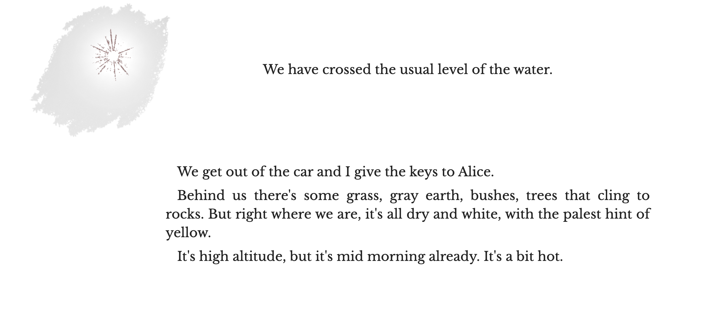

This page is made for a game analysis project. The game is called The Good People.
This game is a form of a text adventure. It means you got text on the bottom to click on and it will send you to a different page.
The game is quite short, only 1 hour worth of content. Not that there is much since its just text on a screen with some images here and there.
Leans heavily with some horror and weird fiction. You play as two main characters that explore a sunken village that is haunted under a dam that has been re-emerged.
The horror aspect is ment to be a physcological horror, not really jumpscares, screams, scary music, etc.
The narrative is fragmented and dreamlike with memories, loss, and the unknown.
This game is great and would highly recommend this if you are into physcological horror or weird fiction short stories.
BE WARNED: This game gets disturbing fairly quickly and the game is quite linear.